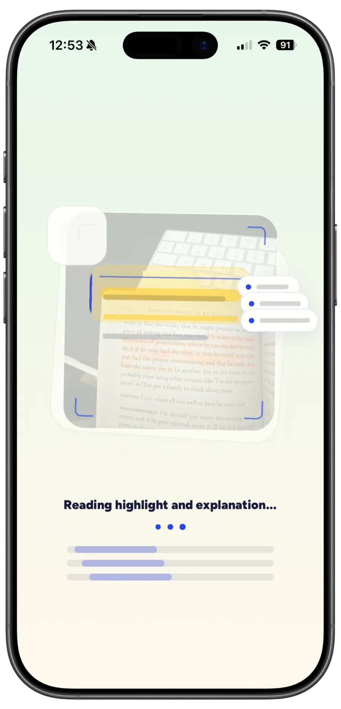
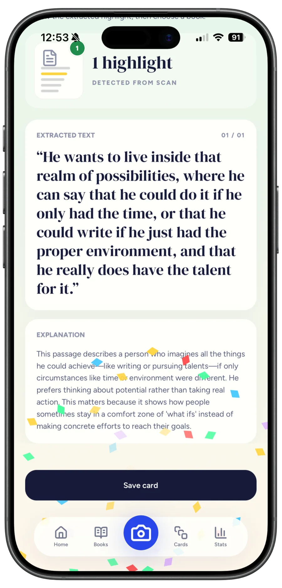
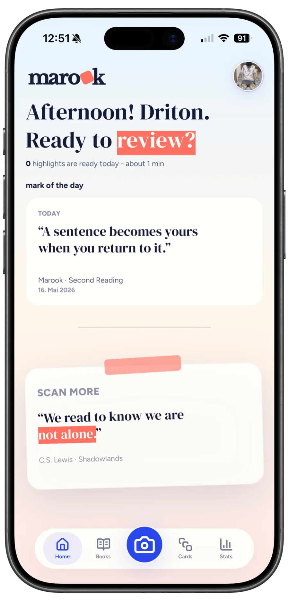

Now on the App Store
Remember more of what you read.
Scan a highlighted page and Marook extracts the passage and explains it in plain language. Save it as a card to review whenever you want.



The problem
You highlight a line because it matters. Two weeks later the idea is gone. Not because it wasn’t important, but because nothing brought you back to it.
-
01
Highlights stay in the book
Your best ideas stay on paper, where you rarely look again.
-
02
Notes take too long
Typing out and explaining passages interrupts your reading, so it keeps getting postponed.
-
03
Nothing brings you back
Without a way to review, even strong ideas blur within days.
How it works
Scan. Understand.
Remember.
-
01Scan
Point your iPhone camera at a highlighted page. Marook finds the passage and extracts the text, no typing needed.
-
02Understand
Marook’s AI explains what the passage says and why it matters, in plain language.
-
03Remember
Save it as a card. It’s filed under its book in your library, ready to search and review anytime.
Inside the app
Built around the page you’re reading.
FAQ
Questions before you download
How much does Marook cost?
Marook is free to download, and free users get 10 AI uses. Premium includes 150 AI uses per month. Current prices are shown in the App Store.
What can I scan?
Printed pages with highlighted passages, such as books, scripts or study material.
Who is Marook for?
Readers, students and anyone who wants to remember more from books, study pages or other learning material.
Which devices are supported?
Marook is an iPhone app and requires iOS 15.1 or later.
What happens to my data?
Read how Marook handles your data in the privacy policy and in the privacy details on the App Store.
Keep what you highlight.
Download Marook and turn your next highlighted page into a card you can come back to.